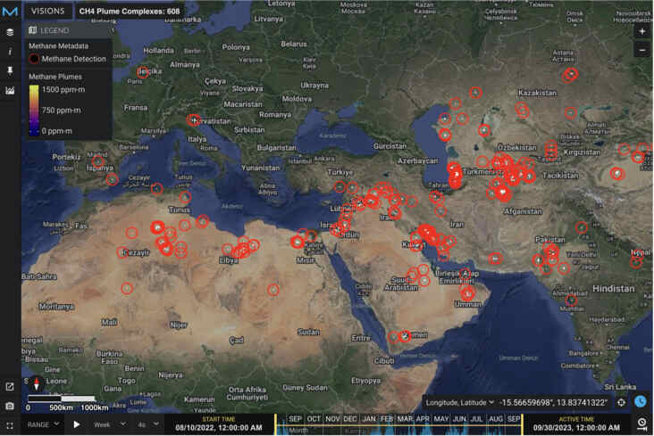

CO2 and Methane Metadatas
You can find more information about these datasets on the EMIT website and the EMIT data portal VISIONS (located in the Resources section). VISIONS is an excellent source to obtain information about images captured by EMIT, detected methane and CO2 plumes, and forecasted coverage areas.
Carbon dioxide and methane are the two dominant gasses that contribute to climate change. Methane traps more heat in the atmosphere per molecule than carbon dioxide, therefore targeting reductions in anthropogenic methane emissions offers an effective approach to decrease overall atmospheric warming.